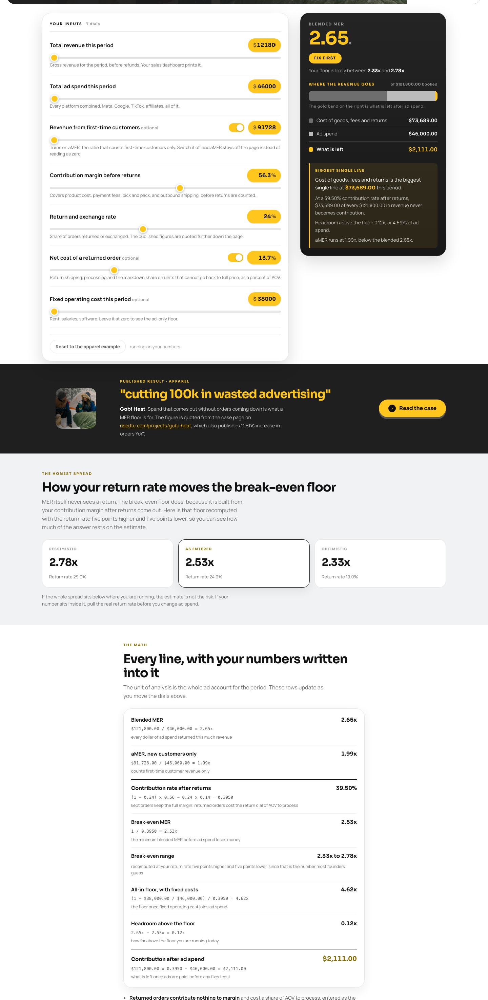
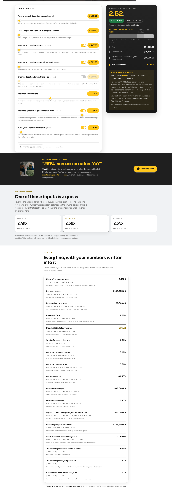
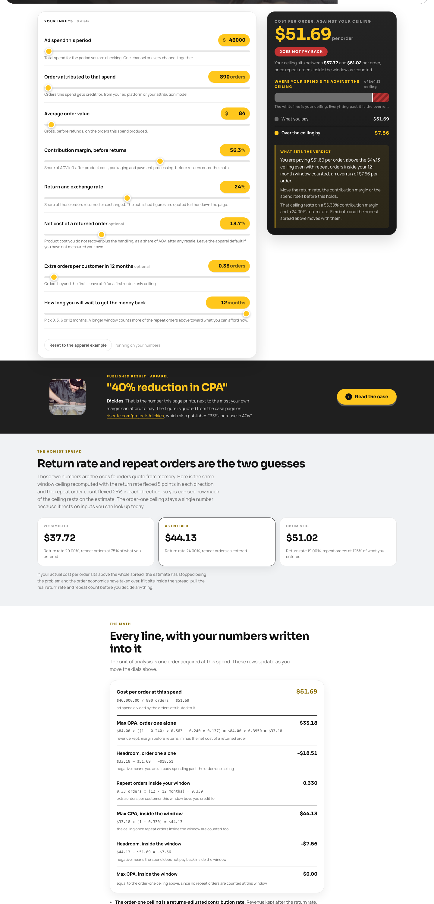

Pack 08 of 09 · Tutorial · free, runs in ChatGPT
Reconcile what the ad platforms claim against what the bank sees, and end on one budget decision.
Runs in ChatGPT Time 15 minutes New data needed One closed month Steps Seven
Tools / The pack, ChatGPT edition / Are your ads paying for themselves, in 15 minutes
The walkthrough
You pull one closed month from Shopify and your ad account, run four calculators on it, and paste the result blocks into one ChatGPT chat.
Meta says your ads made money last month. The platform is reporting a return on ad spend that would make the month a good one, revenue looks fine on the dashboard, and contribution after everything is thinner than it was in spring. You have fifteen minutes, one ad account and one Shopify report. This walkthrough puts the platform's claim, your whole-store blend and your returns-adjusted reality in the same table, then ends on one spend decision with a dollar figure on it.
Every screenshot below is a real run on Northbay Supply, a sample store. Northbay is a synthetic apparel brand built for this walkthrough and labelled a sample store everywhere it appears. Run the seven steps on your own closed month and you land on your own spend decision.
Pick one closed calendar month. Everything below comes from that same month, or the whole exercise reconciles to nothing.
From Shopify: total revenue booked, orders, average order value, revenue from first-time customers, contribution margin before returns, return and exchange rate, the net cost of a returned order as a share of order value, revenue attributed to email and SMS, and your monthly fixed operating cost.
From your ad platforms: total ad spend across every platform, orders attributed to that spend, and the return on ad spend the platforms report.
Northbay's month: $121,800 booked on 1,450 orders at $84, of which $91,728 came from first-time customers and $20,160 from email. Contribution margin before returns 56.3%, return rate 24%, net cost of a returned order 13.7% of order value, fixed cost $38,000. Ad spend $46,000 across every platform, 890 attributed orders, $74,760 of paid-attributed revenue, and Meta reports 3.1x.
About 4 minutesEnter total revenue, total ad spend, first-time customer revenue, contribution margin, return rate, return cost and fixed cost into MER and aMER.

Northbay's blended MER is 2.65x against a break-even MER of 2.53x. Headroom is 0.12x, which is 4.59% of ad spend. Contribution after ads for the month is $2,111 against $38,000 of fixed cost, so the month does not cover the rent. aMER, counting only first-time customer revenue, is 1.99x.
Open the calculator About 2 minutesEnter the same total revenue and total ad spend into Blended ROAS, then add your paid-attributed revenue and your email revenue, switch on the platform-reported dial, and enter the ROAS the platforms show. Leave the organic and direct row switched off so the tool derives it as the remainder.

This is where the month stops being ambiguous. Northbay's returns-adjusted blended ROAS is 2.52x. Paid carries 61.38% of booked revenue and $47,040 arrives from outside paid attribution. And the row that decides the conversation: the platforms claim $142,600 of revenue in a month where the store booked $121,800. That is 117.08% of everything the store sold, and 1.91x the paid revenue the store actually recorded.
Open the calculator About 2 minutesEnter your average order value, contribution margin before returns, return rate, the all-in cost of one return and the net margin you want after ad spend into Break-Even ROAS. Switch on the reported-ROAS dial and enter what the platform claims.

Northbay needs 2.53x to break even once returns sit inside the math, against 1.78x if you leave returns out of it. Returns add 0.76x to the ROAS the store has to clear. At the reported 3.1x, the order nets 7.2% after ad spend against the 10.0% target that was entered.
Open the calculator About 2 minutesEnter ad spend, attributed orders, average order value, contribution margin, return rate, return cost, and the extra orders a customer places inside your payback window into CPA.

Northbay pays $51.69 per order. The first-order ceiling is $33.18, and the ceiling with 12 months of repeat orders counted is $44.13. The verdict prints as DOES NOT PAY BACK, with an overrun of $7.56 per order.
If you are looking for an outside figure to compare any of this against, each calculator carries a published figures block further down its own page with cited sources. This walkthrough uses none of them. The comparison that decides your budget is your own ceiling against your own cost per order.
Open the calculator About 2 minutesCopy the arithmetic card off each of the four pages, the block headed "Every line, with your numbers written into it", and paste them under the headers below.
The ad spend reconciliation prompt
One prompt, one chat. Every rule in it limits what the answer is allowed to claim without showing the arithmetic.
I run a US apparel store on Shopify. [ORDERS] orders last month at an $[AOV] average order value, $[REVENUE] booked. I spent $[SPEND] on ads last month, up from a trailing average of $[PRIOR SPEND], and [PLATFORM] reports [X]x. Below are four result blocks I copied off the RISE DTC calculators. Work only from the numbers below. Rules I need you to hold to: - Never introduce a number I did not give you. Every figure in your answer must be one of mine or arithmetic on mine, with the arithmetic shown. - Never quote an industry benchmark, a typical rate, or what other stores do. - Never predict what a fix would deliver. If I ask what something is worth, compute it from a number I supplied and label it as arithmetic on my input, not a forecast. - If something you need is missing, name the exact report or calculator to go and pull. Do not fill the gap. - Plain text. No em dashes. BLOCK 1: MER AND aMER [paste the headline, the verdict tier, the range line and the whole arithmetic card from resources.risedtc.com/tools/mer-calculator/] BLOCK 2: BLENDED ROAS [paste the same from resources.risedtc.com/tools/blended-roas-calculator/] BLOCK 3: BREAK-EVEN ROAS [paste the same from resources.risedtc.com/tools/break-even-roas/] BLOCK 4: CPA [paste the same from resources.risedtc.com/tools/cpa-calculator/] WHAT CHANGED THIS MONTH: [one sentence, the honest one] Give me back, in this order: 1. A reconciliation table with four rows: what the platform claims, what the blend actually did, what the blend did after returns, and the gap in dollars. Show the arithmetic for the gap. 2. The single binding constraint, named in one sentence, with the two numbers that make it binding. 3. The spend decision for this week: cut, hold or scale, with the dollar amount and the arithmetic behind it. 4. One number to watch next week, with the threshold that would change the decision and where I read it. Do not describe any figure as a midpoint, an average or a typical level unless you show the arithmetic that makes it one. Under 450 words.
You walk away with four things: a reconciliation table you can put in front of anyone who quotes platform ROAS at you, the one constraint that is actually binding, a spend number for this week with the arithmetic attached, and one metric with a threshold to read next Friday.
If the answer to why cost per order climbed turns out to be tired creative, the next artifact is new angles, and those come out of what your customers already wrote. rise-review-angle-miner in the RISE Claude kit takes 15 or more real reviews and returns 5 ad angles, 10 hooks and 3 UGC briefs, in your customers' own language.
Get the kit: the RISE DTC AI kit. Run rise-review-angle-miner for the angles, and rise-weekly-triage to keep this reconciliation on a weekly cadence.
You supply every number, the gap on this page is the platform's own claimed revenue minus the revenue the store kept, and no attribution haircut or industry benchmark enters the math at any step.
This is the ChatGPT edition of this pack item. The Claude edition carries the same math and the captured sample run on its own page.
Proof it runs
The sample below is the Claude run captured for the original pack page, printed whole so you can read the shape of the result before you spend fifteen minutes on it. A ChatGPT capture is not printed here yet. The store below is synthetic, built so the arithmetic is checkable by anyone.
Northbay Supply is a sample store. Every figure below is synthetic and none of it belongs to a client.
What came back on the sample store (verbatim):
1. Reconciliation
| Revenue | ROAS | |
|---|---|---|
| Platform claims | $142,600.00 | 3.10x |
| Blend, booked | $121,800.00 | 2.65x |
| Blend, after returns | $115,953.60 | 2.52x |
| Gap (platform vs. blend after returns) | $26,646.40 | 0.58x |
Gap arithmetic: $142,600.00 - $115,953.60 = $26,646.40. In ROAS: 3.10x - 2.52x = 0.58x.
2. Binding constraint
CPA is $51.69 against a max ceiling of $44.13: 890 attributed orders × $7.56 overrun per order = $6,728.40 more spent than the 12-month window repays.
3. Spend decision: CUT to $39,276
Max spend at the $44.13 ceiling with 890 attributed orders: $44.13 × 890 = $39,275.70, rounded to $39,276.
Cut: $46,000.00 - $39,275.70 = $6,724.30.
This holds attributed order count constant at 890. If attributed orders move with spend, rerun the CPA calculator at the new count before treating $39,276 as the target.
4. Number to watch: blended MER
Current: 2.65x. Threshold: 2.53x. Below 2.53x, contribution after ad spend goes negative ($2,111 becomes zero at 2.53x, per Block 1: $121,800 × 0.3950 - $46,000 = $2,111). Pull it from the MER calculator at the end of next week.
Note what the answer refuses to do. It does not apply an attribution haircut, because no haircut exists here: the gap is the platform's own claimed revenue against the store's own kept revenue, subtracted. And it flags its own assumption in the spend decision, that attributed orders hold at 890 while spend comes down, which is the assumption the cut turns on.
Where every figure in the answer comes from:
| Figure in the answer | Source |
|---|---|
| $142,600.00 claimed | blended-roas-calculator.platform_claimed_revenue, on screen as "Revenue your platforms claim: $142,600.00" in assets/02-blended-roas-calculator.png |
| 3.10x | Platform-reported ROAS, an input |
| $121,800.00 booked | total_revenue input, on screen in the same arithmetic card |
| 2.65x | blended_roas, and the same figure as the MER headline in assets/01-mer-calculator.png |
| $115,953.60 | blended-roas-calculator.net_kept_revenue, on screen as "Net kept revenue" |
| 2.52x | ra_blended_roas, the headline of assets/02 |
| $26,646.40 and 0.58x | Arithmetic the answer shows: $142,600.00 - $115,953.60, and 3.10x - 2.52x |
| $51.69 | cpa-calculator.cpa_actual, the headline of assets/04-cpa-calculator.png |
| $44.13 | cpa-calculator.max_cpa_ltv, on screen as "Max CPA, inside the window" |
| $7.56 | cpa-calculator.headroom_ltv = -7.56, on screen as "Over the ceiling by: $7.56" |
| 890 orders | conversions input, on screen in the orders dial |
| $6,728.40 | Arithmetic: 890 x $7.56 |
| $39,275.70, $39,276, $6,724.30 | Arithmetic: $44.13 x 890, then $46,000.00 minus that |
| 2.53x break-even MER | mer-calculator.breakeven_mer, on screen as "Break-even MER" in assets/01 |
| $2,111 | mer-calculator.contribution_after_ads, on screen as "Contribution after ad spend" |
| 0.3950 | mer-calculator.cm_rate_ra_pct = 39.5, on screen as "Contribution rate after returns: 39.50%" |
| $46,000.00 | total_ad_spend input |
Northbay Supply is a sample store built for this walkthrough. Every screenshot on this page is a live run of the calculator linked above it, and every number in the text is the number on the screenshot.

From week one we run this reconciliation on live ad and Shopify data, then set the weekly budget from the ceiling your own margin prints. Book a 30 minute intro call and we will walk your spend together.
Book an intro callMattan Danino CEO, RISE DTC Direct with the team. No pitch deck.